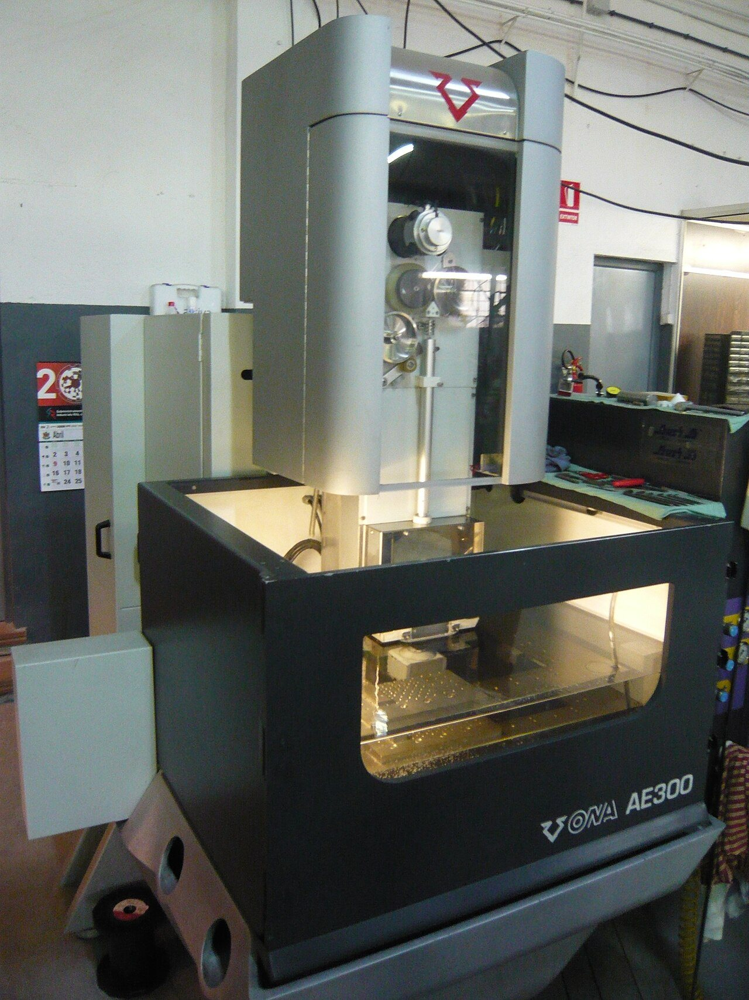

Wire EDM
precision cutting of hardened metals and mould parts
HyperFab carries out wire EDM cutting of metal parts and tool and mould components to your drawing and delivers them. Wire EDM cuts with sparks, not tool pressure, so hardened steel, sharp inside corners and thin walls that are hard or impossible to mill or turn can be cut accurately.
- Process: wire EDM; cutting with sparks and no cutting force
- Materials: conductive metals, hardened steel included
- Uses: punches and dies, mould inserts and precision parts

.jpg){kind=link}
Wire EDM (wire cutting, or wire-cut EDM) cuts electrically conductive metals with electrical sparks: a thin wire follows the path of the drawing through the part without touching it and with no cutting force, so it cuts hardened steel and leaves almost sharp inside corners. HyperFab, a manufacturing company in Tehran, Iran, carries out wire EDM cutting of metal parts and tool and mould components, such as punches and dies, to your drawing and delivers them. Give the material, thickness and quantity when you enquire; call +98 996 223 3898.
- Service
- Wire EDM (wire cutting) of metal parts, tool and mould components
- Process
- Spark erosion with a thin wire, no cutting force
- Materials
- Conductive metals, from hardened tool and die steels to stainless steel, aluminium, brass, copper and carbide
- Common uses
- Punches and dies, mould inserts, precision parts with complex profiles
- Material, thickness, quantity
- Tell us when you enquire
- Ordering
- By phone (+98 996 223 3898) or Bale (@hyperfab_pro)
- Location
- Tehran, Iran
Surface grinding a metal part
Real HyperFab footage of surface grinding: the wheel of a surface grinder passes back and forth over a metal part held on the machine table and grinds its face flat. The sparks come from the wheel meeting the metal.
Surface grinding is a common step before and after wire cutting die parts: the faces are ground flat and parallel before cutting and brought to final size afterwards.
What is wire EDM, and what does HyperFab do?
Wire EDM — also called wire cutting, wire-cut EDM or wire erosion — is a form of electrical discharge machining (EDM). A thin wire works like a saw that never touches the part: it follows the path of the drawing, and the metal is removed a tiny particle at a time by a rapid series of small sparks. The machine is CNC-controlled, and the wire path is programmed from the part’s 2D drawing.
HyperFab carries out wire EDM cutting of metal parts and tool and mould components to your drawing and delivers them, from reviewing the drawing and start-hole positions to cutting and inspecting the part. Wire EDM earns its place where other processes struggle: hardened steel, sharp inside corners, complex profiles and precise punch-to-die clearances.
How does wire EDM work? Sparks, wire and dielectric water
The wire never touches the part: a rapid series of sparks across the tiny gap between them melts and vaporises the metal, and dielectric water flushes the particles away.
Spark erosion
A voltage is applied between the wire and the part, and sparks jump across the tiny gap between them in rapid succession. Each spark melts and vaporises a minute particle of metal, and the cut is built up from these removed particles.
A thin, always-fresh wire
The wire, usually brass or coated, feeds continuously from a spool through the cut. The sparks wear the wire too, so fresh wire is always arriving at the cut and accuracy stays consistent through the job.
Dielectric water
Cutting takes place in deionised (dielectric) water. The water controls the sparks, keeps the cut cool and flushes the removed particles out of the kerf.
No cutting force
The wire puts no pressure on the part, so the part does not bend or vibrate under the tool. Thin walls, narrow tabs and delicate parts are cut without distortion, and the part’s hardness does not stand in the way.
Start holes
The wire has to pass through the part. To cut a closed internal shape, such as a die opening, a start hole is first made by drilling or by small-hole EDM drilling, and the wire is threaded through it. A cut that starts from the outer edge of the part needs no start hole.
2D and taper cuts
Wire EDM cuts a 2D profile straight through the full thickness of the part. Taper cuts, for example for die clearance angles, are reviewed on request and depend on the machine.
Which materials and parts is wire EDM best for?
Wherever the part is hard, needs sharp inside corners or thin walls, or depends on a precise punch-to-die clearance.
Wire EDM cuts any electrically conductive metal: conductive metals, from hardened tool and die steels to stainless steel, aluminium, brass, copper and carbide. Materials that do not conduct electricity, such as plastics, cannot be wire cut. Give the material and thickness of the part when you enquire.
Hardened steel: the hardness of the part is no obstacle to wire EDM. A part can therefore be heat-treated first and cut to its final shape afterwards, so heat-treatment distortion is not carried into the finished profile.
Sharp inside corners: the inside corner radius is limited only by the wire radius and the spark gap — far smaller than the radius a milling cutter leaves in a corner.
Thin walls and tabs: with no force on the part, fine and narrow features are cut without vibration or bending.
Punch-to-die clearance: a punch and die can be cut from the same drawing with a wire-path offset, so the clearance between them comes out as the designer intended.
Common uses of wire EDM: punches and dies for blanking and punching tools, mould inserts, precision parts with complex 2D profiles, gears, splines and keyways, and cutting hardened parts after heat treatment.
Wire EDM, laser cutting or milling: which fits best?
Wire EDM is the most precise and gentlest of the three and the go-to process for hardened steel, but it is slower and usually costs more. For ordinary sheet, laser cutting fits better; for 3D forms, milling does.
| Aspect | Wire EDM | Laser cutting | CNC milling |
|---|---|---|---|
| Material hardness | Cuts hardened steel too; the material only has to conduct | Common sheet materials; the heat of the cut affects the edge of hardened steel | Difficult, slow and costly in hardened steel |
| Inside corners | Almost sharp; limited only by the wire radius | Fairly sharp | Rounded to at least the cutter radius |
| Heat-affected zone | Very small; the cut is made under water | Yes; the cut edge is heated | None; the cut is mechanical |
| Thickness range | From thin sheet to thick die blocks | Mostly sheet; edge quality drops as thickness grows | No thickness limit, and it makes 3D forms |
| Cutting force | None | None | Yes; the part must be clamped firmly and thin walls may chatter |
| Speed and cost | Slow; higher cost per part | Fast; economical for sheet and batches | Moderate; depends on geometry and material |
| Best for | Punches and dies, mould inserts, hard precision parts | Sheet parts, frames and panels, sample to batch | Prismatic and 3D parts, pockets and tapped holes |
How should I prepare a drawing for wire EDM?
Send a DXF or STEP file, mark the start-hole positions, state the hardness and heat treatment, and ask for tight tolerances only where they are needed.
File: for a 2D profile, a full-scale DXF file is the best input. If the part is 3D or has taper cuts, send a STEP file too. A fully dimensioned PDF drawing is also accepted.
Start-hole positions: for each closed internal shape, mark the start hole on the drawing or say where one is allowed. If the part is heat-treated before wire cutting, it is better to make the start holes before hardening.
Hardness and heat treatment: give the material and hardness, and say whether the part is already hardened or will be heat-treated later.
Tolerances only where needed: put tight tolerances only on the dimensions and faces that really matter, such as the punch-to-die clearance. Needlessly tight tolerances add cutting passes and cost.
Punch-to-die clearance: if you order a punch and die together, state the clearance you want, or tell us the material and thickness of the sheet the tool will cut.
Material, thickness and quantity: give the material and thickness of the part and the quantity you need when you enquire.
Wire EDM in the mould and part-making chain
Wire EDM is usually one step in a chain. Tool and mould components are turned or milled before wire cutting, heat-treated, and surface-ground flat and parallel; after wire cutting they may also get a final grind. When you enquire, say what stage the part is at and what work remains, so the whole route can be reviewed together.
At HyperFab, wire EDM sits alongside other services: punches and dies for sheet and tube punching tools, inserts and precision parts for mould making and injection moulding, and round parts that need CNC turning before or after wire cutting. The advantage of this chain is one responsible party for the whole part.
How is wire EDM ordered?
Four steps: send the drawing, review and quote, wire cutting, and inspection and delivery.
Send the drawing
Send the DXF or STEP file and drawing on Bale, or call and give the material, thickness, hardness and quantity.
Review and quote
The drawing, start-hole positions and tolerances are reviewed and a price is given.
Wire cutting
Once you approve, the part is wire cut.
Inspection and delivery
The critical dimensions are checked and the part is delivered.
More HyperFab services
Frequently asked questions
Which materials can wire EDM cut?
Can wire EDM cut hardened steel?
Why does wire EDM need a start hole?
How is wire EDM different from laser cutting?
What file do you need for wire EDM?
How is wire EDM priced?
Where is HyperFab’s wire EDM service based?
Send us your wire EDM drawing
Send the DXF or STEP file with the material, thickness, hardness and quantity, or call. HyperFab’s industrial projects specialist answers by phone.